Melina Frei
Ich bin in der Ausbildung zur Grafikerin an der Fachklasse Grafik Luzern
Designobjekte
Im folgenden Projekt erhielten wir drei Designermöbel beziehungsweise Leuchten, die jeweils einer bestimmten Epoche zugeordnet waren. Meine drei Objekte stammten aus der Bauhaus-Epoche. Zunächst recherchierten wir zu dieser Epoche. Anschliessend entwickelten wir ein passendes Layout, dass zur Epoche und den Möbeln passt.
Drehbuch
24 Stunden
In diesem Projekts verfassten wir ein Drehbuch im Fach Deutsch. Jeder von uns erhielt einen bestimmten Zeitabschnitt, innerhalb dessen die Geschichte erzählt wurde. Dieses Drehbuch diente als Grundlage für die Fotografien, die wir passend zur Handlung aufnahmen. Anschliessend bearbeiteten wir die Bilder. Aus dem gesamten entstandenen Material entwickelten und gestalteten wir schliesslich ein Layout.
Paris Projekt
Im Rahmen dieses Projekts reisten wir für zwölf Tage nach Paris. Dort sammelten wir möglichst viel Material in Form von Skizzen und Fotografien. Anschliessend reisten wir in die Schweiz zurück. Wieder zu Hause begannen wir, unser gesammeltes Material zu ordnen und zu strukturieren. Daraus gestalteten wir schliesslich eine Publikation.


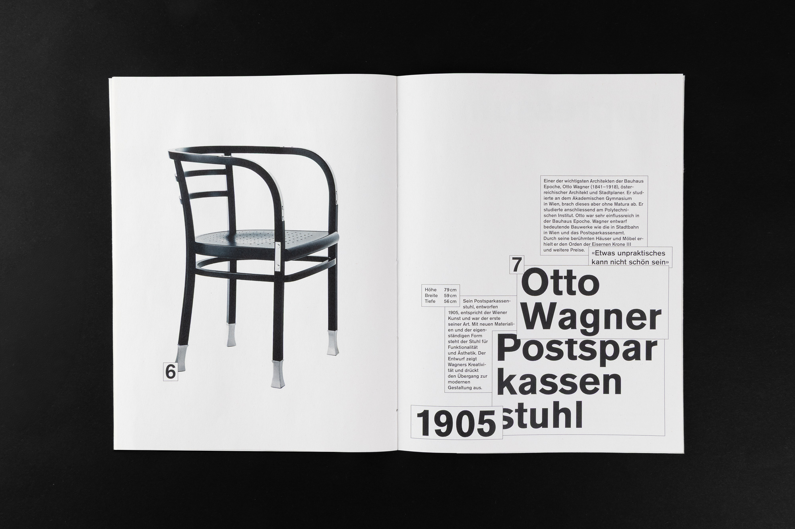
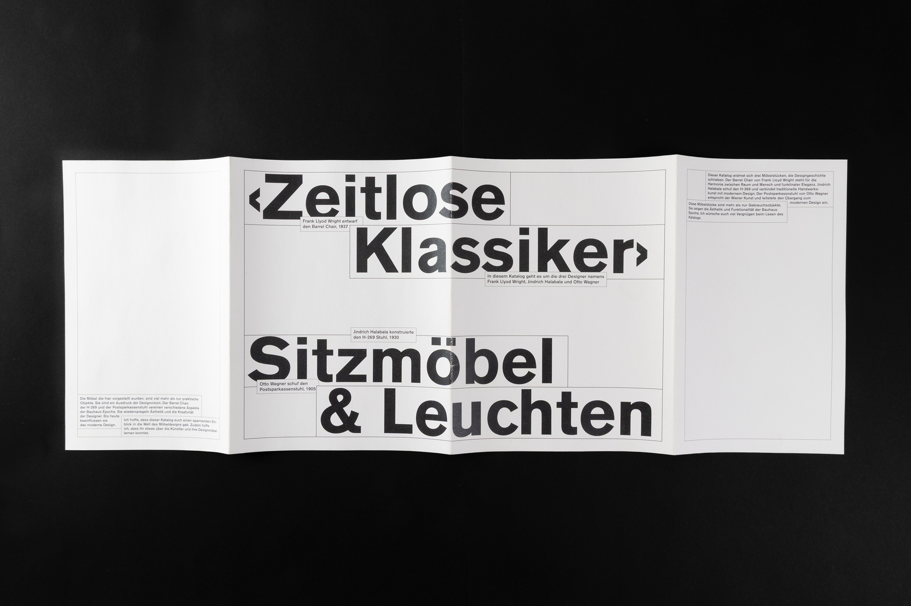
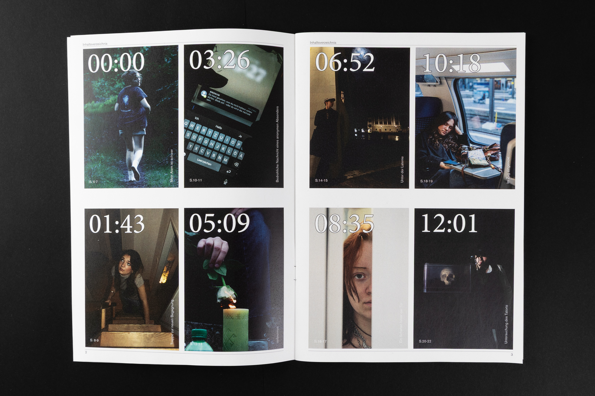
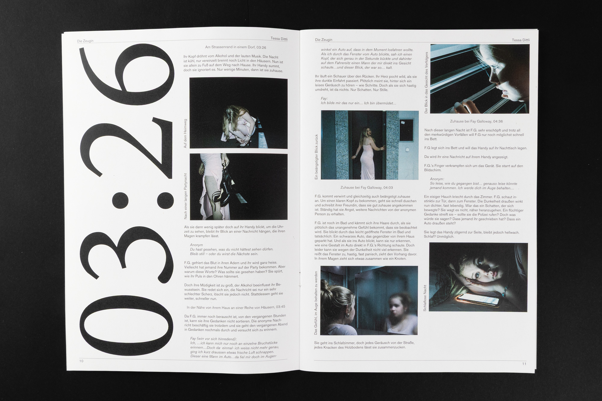
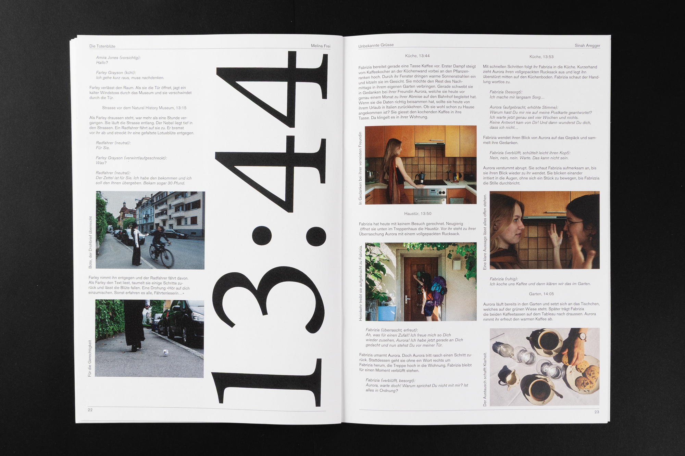
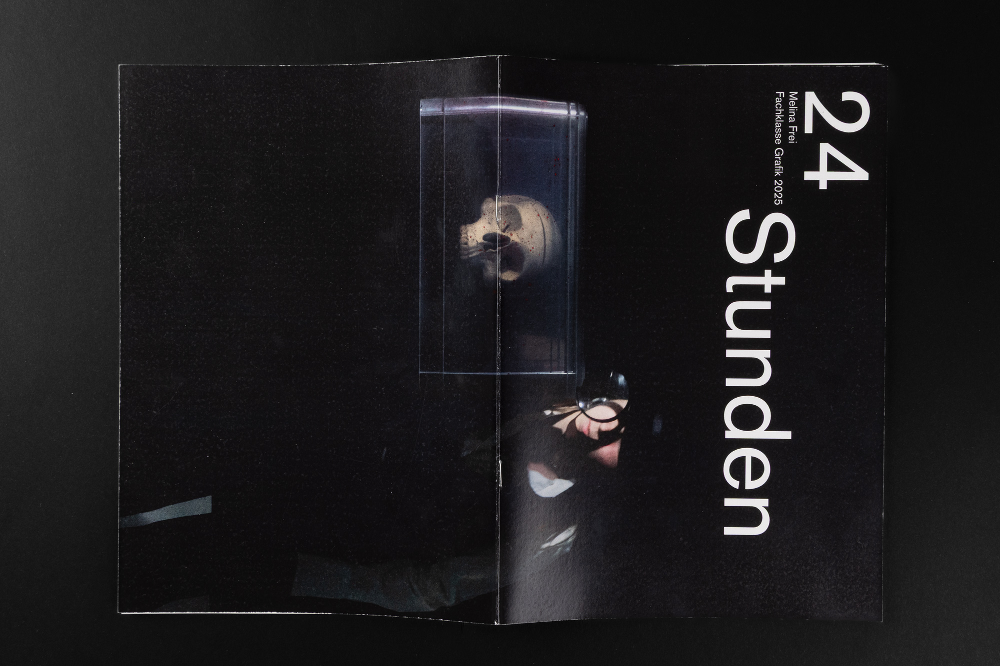
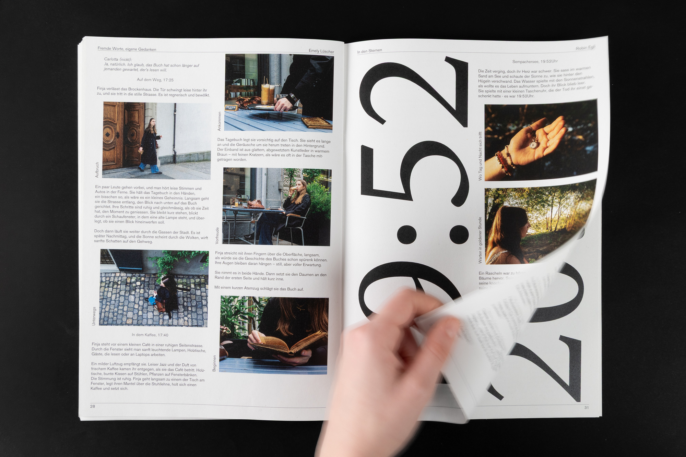
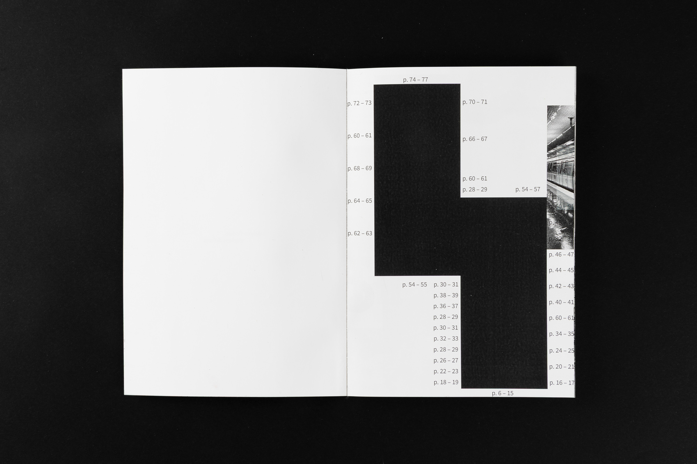
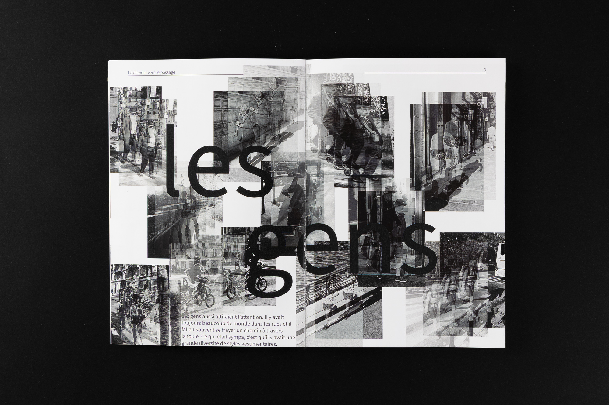
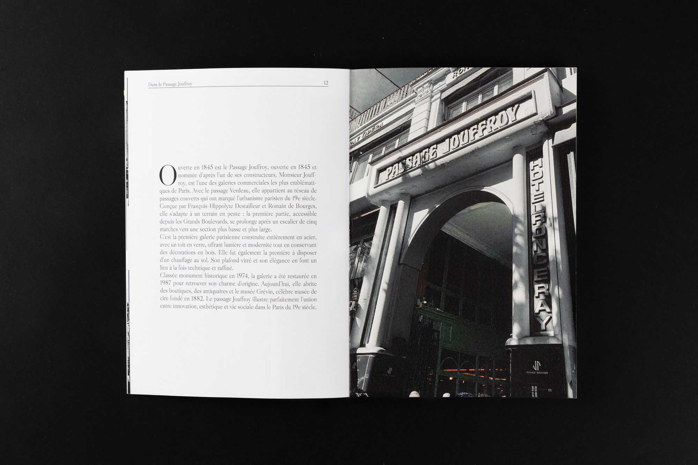
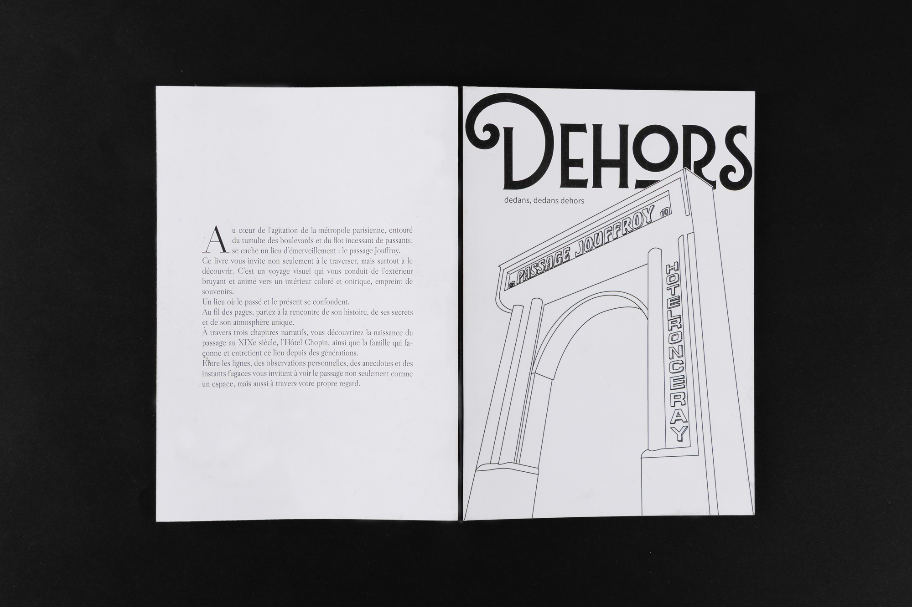
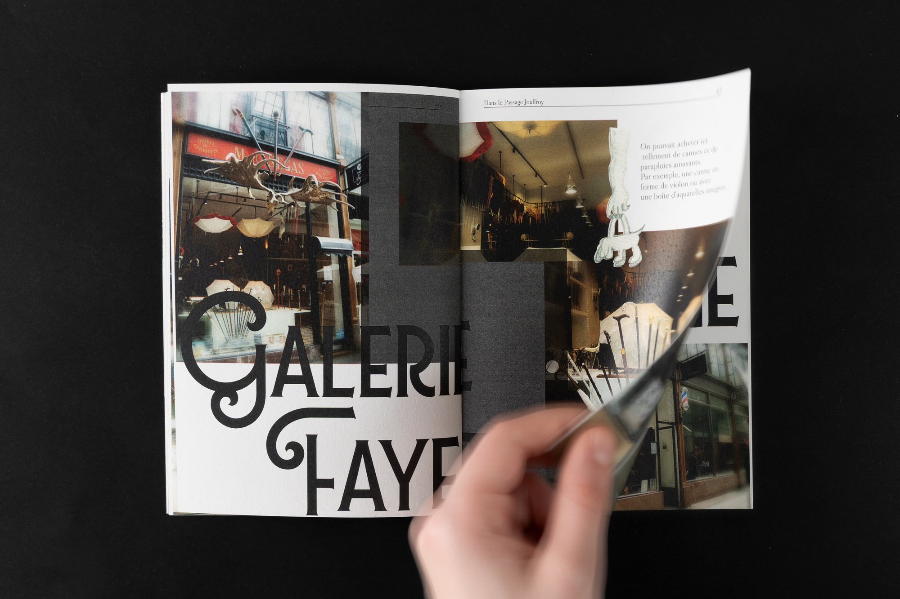